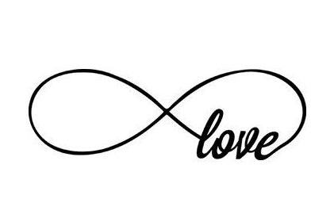

2020. május 30.
Dorina


Tomi
Dorina
Tomi
Rábapaty, Felsőpatyi u. 90.
Szombathely, Rumi Rajki Sétány 1.
| 14:00 | Mennyasszok kikérés |
| 14:30 | Templomi szertartás |
| 17:00 | Polgári szertartás |
| 19:00 | Vacsora |